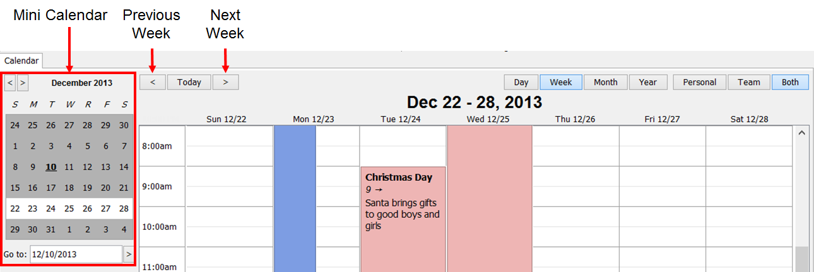

Navigating Week View
The Week view displays all events for the selected week, from the beginning of the week (Sunday) to the end of the week (Saturday).
To apply this view, click the Week button at the top right of the module.
To navigate between weeks, click on the arrow buttons at the top left of the calendar to jump forward or backward by a week at a time.The Previous Arrow navigates to the previous week, while the Next Arrow navigates to the upcoming week. Alternatively, click on desired day on the Mini Calendar to bring it up that week in view. Also the arrow keys on the keyboard can be used to navigate by one week at a time.
